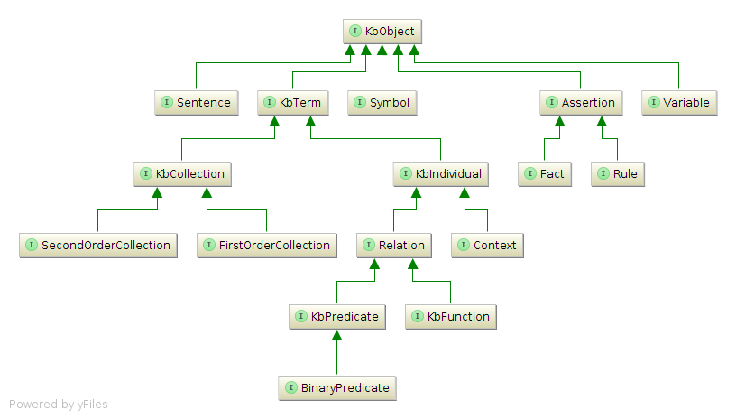

The KB API provides basic functionality for manipulating CycL-based Java objects.
The API extracts the main Predicate Logic constructs in the Cyc KB as Java classes.
A set of factory methods allow finding and creating terms and assertions. These
can be used to build sentences, to create new assertions or to build queries.
Details
The KB API has two main object hierarchies:
The term hierarchy and its sub-classes are used to create various Predicate Logic
constructs. The main classes under KbTerm are KbCollection,
KbIndividual, Relation and Context.
The assertion hierarchy is used to create Facts (Ground Atomic Formulas)
and Rules. To help create and manipulate assertion sentences, the API provides the
Sentence class.

Diagram of the KB API class hierarchy
A corresponding set of factory methods allow KB API objects to be constructed via calls to
static #findOrCreate(...) and #get(...) methods, which create and cache
java-side objects that correspond to objects in the KB. For example:
Additional factory methods are provided by com.cyc.Cyc, and
com.cyc.Cyc.Constants contains frequently-used terms.
Because of caching, it is possible for a KbObject to point to an object that no longer exists in the
Cyc KB. The validity (or staleness) of a KB Object can be checked by the
KbObject#isValid() method.
The Session API provides thread local variables to set bookkeeping (which time-stamps and tracks
authorship for assertions and term creations) and transcription (which records every KB operation),
as well as default context for queries and assertions. These can be found via
com.cyc.session.CycSession#getOptions(). Note that
SessionOptions.setCyclistName("<the cyclist>") should be set for bookkeeping
information to be asserted.
The exception hierarchy of the KB API provides useful information about the cause of failure
of an operation. All instances of CycConnectionException (which indicate Cyc Server
unavailability) are chained under KbRuntimeException. Most instances of
CycApiException and CycApiServerSideException are chained under
KbServerSideExceptions. Because the KB API uses cached objects, it throws a
StaleKbObjectException when an object refers to a deleted KB concept.
Below are snippets of code that show how to perform some of the most basic operations using the KB
API. More detailed examples can be found on the Sample Code page.
Configure (per session/thread)
Here we are defining options programmatically, but future versions of the Session API will allow
them to be defined via configuration properties.